Avant de plonger dans Internet : un tour des machines qui t'entourent — ordinateurs, smartphones, montres connectées — et, en même temps, le mode d'emploi de ce cours. Tu vas l'apprendre en t'en servant.
Découvrir ce qu'est un système informatisé, distinguer le réseau des services qui circulent dessus — et, au passage, apprendre chaque geste de ce cours : valider une étape, envoyer une réponse, télécharger sa fiche.
En SNT, chaque thème du programme est une séquence comme celle-ci. Une séquence est une suite de séances (à peu près une heure et demie chacune), et chaque séance est découpée en étapes : une étape, une notion. Tu entres toujours par le hub — la page SNT qui montre les huit thèmes de l'année. Pas par un favori posé sur une page au hasard : le hub sait où tu en es, un favori non.
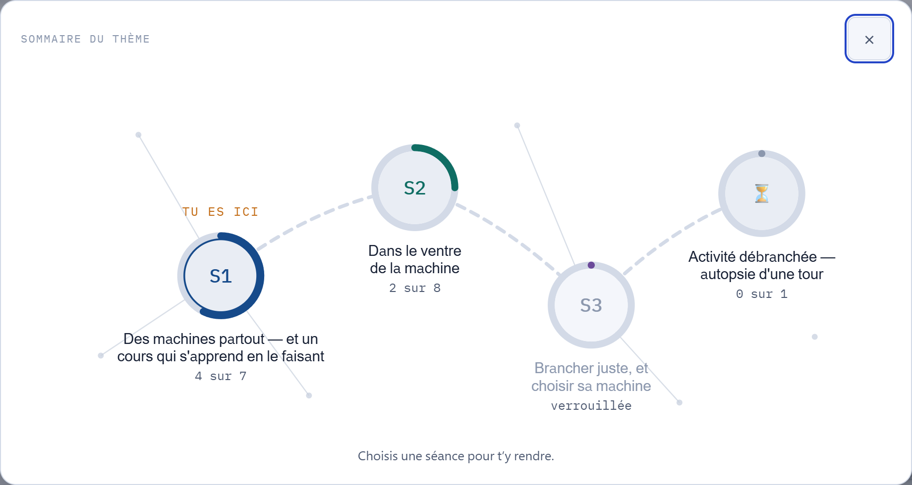
Ouvre n'importe quelle étape de l'année, tu y trouveras les mêmes blocs, toujours dans cet ordre :
| Bloc | À quoi il sert |
|---|---|
| 🎯 Objectif | Ce que tu dois savoir faire à la fin de l'étape |
| Ressource | Une vidéo, un document, un podcast — de quoi chercher |
| « À retenir » | Ta trace de cours, déjà rédigée : rien à recopier |
| Exercice | À toi de jouer — c'est lui qui valide l'étape |
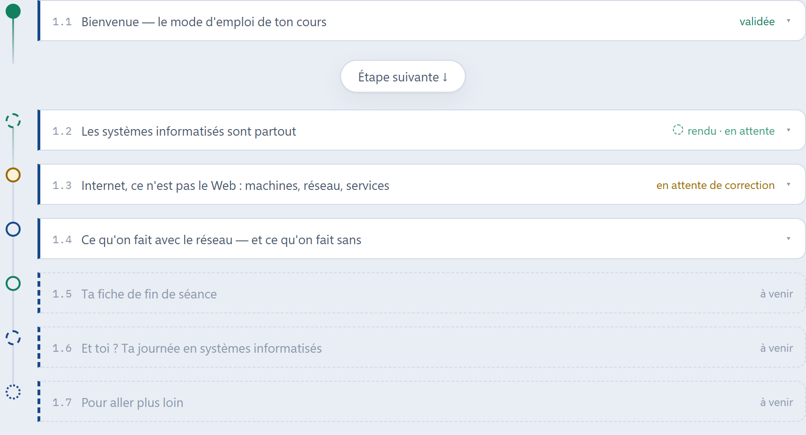
Sur les étapes très fournies, le « à retenir » est caché au départ. À sa place, une ligne grise t'annonce combien de réponses il te reste à donner, et le bilan s'ouvre tout seul dès que l'exercice est fait. Tu en verras deux, un en séance 2 et un en séance 3.
Deux endroits te disent où tu en es : la pastille à gauche de chaque étape, et la barre de progression sur le côté. Elles ne se dessinent pas tout à fait pareil.
| Dans le fil du cours | Ce que ça veut dire |
|---|---|
| vide, cerclée de la couleur de la séance | Étape à faire. Bleu en séance 1, vert en séance 2, violet en séance 3 |
| jaune pleine | Réponse envoyée, en attente de correction |
| verte, creuse, en pointillés | Ton travail est rendu — personne ne l'a encore relu |
| verte pleine | Validé par ton professeur |
| Dans la barre de progression | Ce que ça veut dire |
|---|---|
| ✓ verte avec une coche | Validé |
| ✓ verte creuse, en pointillés | Rendu, pas encore relu |
| … jaune avec trois points | Envoyé, en attente |
| cerclée d'orange en pointillés | L'étape où tu es en ce moment |
| grise en pointillés, suivie de 🔒 | Pas encore ouverte |
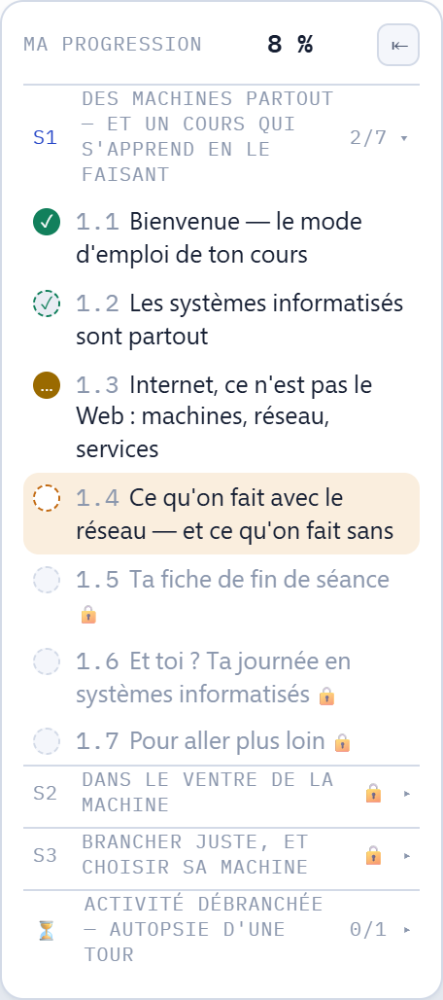
Tu ne vois qu'une étape à la fois : quand tu as fini, le bouton « Étape suivante ↓ » fait apparaître la suivante. À gauche, la barre de progression te montre toutes les étapes de la séquence : celles que tu as faites, celle où tu en es, celles qui t'attendent. Tu peux cliquer dessus pour t'y rendre. Si elle te gêne, replie-la avec le bouton ⇤ — elle devient un bandeau en haut de page, et le bouton ⇥ la fait revenir.
Tout ce que tu lis n'a pas le même statut. Chaque bloc porte, en petit et sur sa droite, une marque qui te dit ce qu'on attend de toi. Regarde autour de toi sur cette page — elles y sont déjà toutes.
| Marque | Ce que ça veut dire | Où tu la trouves |
|---|---|---|
★★ | À savoir — ça tombe en évaluation | les « à retenir », ton glossaire |
★ | À savoir faire — ça tombe sous forme d'exercice | les exercices, dont ceux du bilan |
○ | Support — ça contient de l'évaluable, mais c'est toujours repris ensuite dans un « à retenir » | documents, vidéos, podcasts, images |
✦ | Bonus — ça peut donner une question bonus | 🇫🇷 fierté française, « le sais-tu ? » |
— | Jamais évalué — c'est pour le plaisir et pour aller plus loin | « pour aller plus loin », activités d'introduction |
⚠️ Bonus n'est pas la même chose que facultatif. Un bonus ✦ peut te rapporter des points ; un « pour aller plus loin » — n'en rapporte jamais, il est là pour le plaisir de creuser. Les deux se croisent dans chaque séquence de l'année.
C'est le point le plus important de cette page. Selon l'exercice, la correction ne vient pas du même endroit — et tu ne dois pas attendre la même chose.
| Type d'exercice | Corrigé par | Ce que tu vois |
|---|---|---|
| QCM | le navigateur, en direct | Vert ou rouge immédiatement, puis la bonne réponse et son explication |
| Texte à trous | le navigateur, en direct | Les cases passent en vert, en orange (« presque ») ou en rouge |
| Association, tri | le navigateur, en direct | Pareil : chaque ligne juste ou fausse, et tu peux recommencer |
| Réponse rédigée | envoyée, pré-corrigée, puis validée par le professeur | Pastille jaune en attente, puis verte, avec un retour écrit rien que pour toi |
| Réponse personnelle | jamais corrigée | Aucune bonne réponse : elle sert à lancer la discussion en classe |
Sur les réponses rédigées, le copier-coller est bloqué et la page se floute pendant que tu écris.
Le mérite. Les étapes marquées à valider sont celles qui comptent. Quand elles sont toutes vertes dans une séance, la séance suivante s'ouvre — regarde le cadenas 🔒 dans le menu du haut.
Le rythme de la classe. Il y a une seconde règle, et elle est là pour qu'on avance ensemble : tu ne peux pas ouvrir plus de deux séances d'avance sur ce que la classe a réellement fait. Concrètement, le jour de la rentrée, rien n'étant encore terminé, tu as les séances 1 et 2 ouvertes et la séance 3 fermée. Elle s'ouvrira quand la classe aura terminé la première. Si une séance affiche ⏳ au lieu de 🔒, c'est celle-là : tu n'as rien raté, tu es simplement en avance.
📖 Ton glossaire — le bouton en bas à droite, ouvert en permanence, dans toutes les séquences. Tu y retrouves les mots déjà définis et tes propres définitions. Tu en écriras une en séance 2.
🔒 Le mode enseignant — la télécommande de ton professeur, en haut de page. Elle ouvre tout, demande un code, et se coupe seule au bout de 30 minutes. On y revient en séance 3.
Un système informatisé, c'est une machine qui traite de l'information : elle reçoit des données, les calcule, et produit un résultat. Les premiers qui viennent à l'esprit sont ceux qu'on a sous la main. Sous chaque image, la même lecture en trois temps : ce qui entre, ce qui est calculé, ce qui sort.
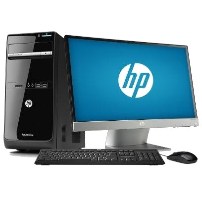
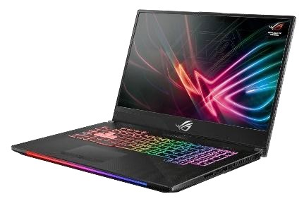
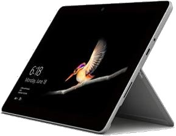
C'est là que ça devient intéressant. Un valideur de bus qui lit une carte et décide en une seconde si le voyage est payé, une caisse automatique qui pèse les articles et rend la monnaie, un lave-linge qui adapte son cycle à la charge du tambour : aucun de ces objets ne ressemble à un ordinateur, et tous en contiennent un. Sans écran d'ordinateur, sans clavier — mais avec un processeur, de la mémoire, des capteurs et un programme.
Le critère n'est donc pas la forme de l'objet. C'est : est-ce qu'il reçoit de l'information, la traite, et agit en conséquence ? Si oui, c'est un système informatisé. Toute une séquence de l'année leur sera consacrée : l'informatique embarquée.
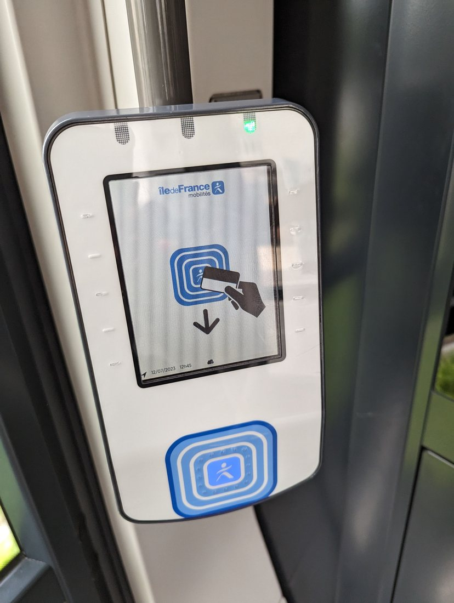
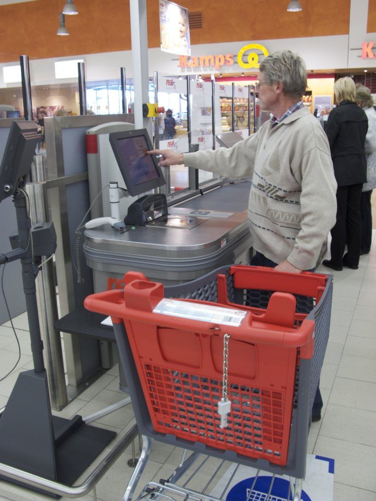
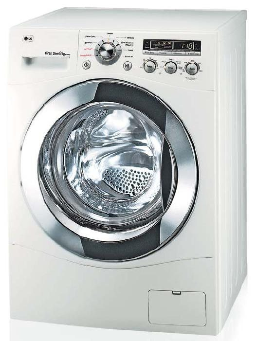
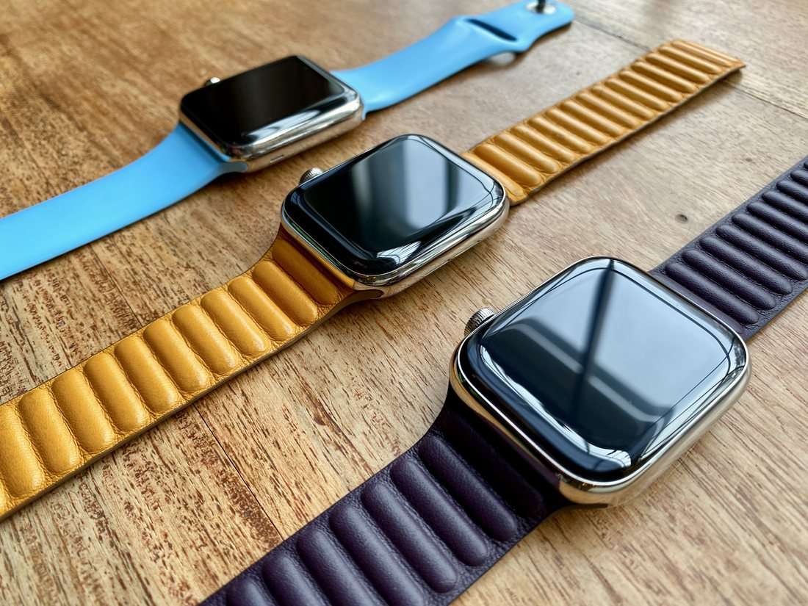
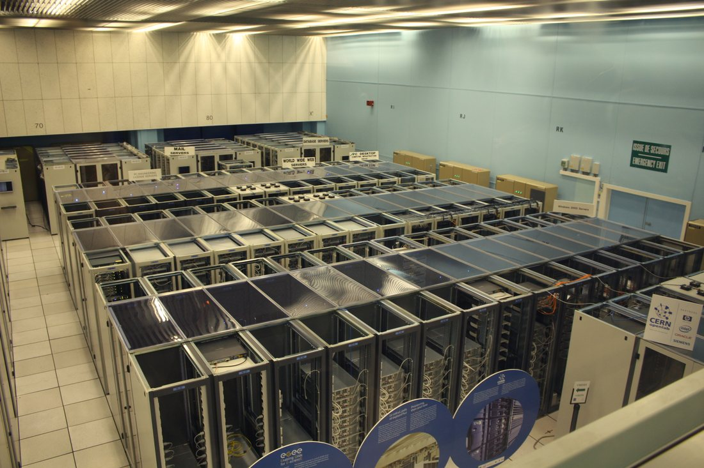
🧭 Beaucoup de mots nouveaux, et c'est normal. Cette étape est un survol. Internet, le Web, les routeurs, les câbles sous-marins, les serveurs : chacun de ces mots a une séquence entière qui l'attend dans l'année. Ici, on veut juste que tu voies la différence entre le réseau et ce qui circule dessus. Tu n'as rien à apprendre par cœur d'autre que ça.
Quand tu regardes une vidéo, trois choses différentes travaillent en même temps, et on leur donne souvent le même nom — « Internet ». Il faut les séparer une fois pour toutes, parce que les deux séquences suivantes de l'année portent précisément là-dessus.
Les machines. À un bout, ton terminal — le mot du cours pour « la machine reliée au réseau, celle qui est devant toi ». À l'autre bout, un serveur : une machine allumée en permanence, dans un bâtiment climatisé, dont le métier est de répondre aux demandes des autres.
Le réseau. Entre les deux, Internet : l'interconnexion de tous les réseaux de la planète, faite de câbles, de fibre, d'antennes et de routeurs. Il ne fabrique rien, il transporte.
Les services. Par-dessus circulent des services : le mail, le transfert de fichiers, la discussion instantanée, le streaming, le jeu en ligne — et le World Wide Web, celui des pages et des liens. Le Web est un service parmi d'autres, pas le réseau. C'est l'erreur la plus fréquente de l'année, et elle ouvre la séquence du Web.
Dernière chose, souvent oubliée : sans connexion, un ordinateur reste utile. Écrire, calculer, retoucher une photo, monter une vidéo, jouer hors ligne, programmer : tout cela n'a besoin d'aucun réseau. On y revient à l'étape suivante.
| Ce qu'on cherche | Exemples |
|---|---|
| Communiquer | Mail, discussion instantanée, visio, réseaux sociaux |
| Se cultiver | Encyclopédies, cours en ligne, presse, podcasts |
| Se divertir | Streaming vidéo et musical, jeux en ligne, vidéos courtes |
| Se simplifier la vie | Démarches administratives, itinéraires, achats, banque |
| Faire des économies | Comparateurs, occasion entre particuliers, coupons |
| S'organiser | Agenda partagé, fichiers dans le nuage, listes à plusieurs |
On a pris l'habitude de dire « je n'ai plus Internet, je ne peux rien faire ». C'est faux, et c'est justement ce qui distingue la machine du réseau. Sans aucune connexion, un ordinateur sait encore : écrire un texte, faire un tableau de calcul, retoucher une photo, monter une vidéo, écouter la musique déjà stockée, jouer à un jeu installé, programmer, dessiner, imprimer. Tout ce qui n'a pas besoin d'aller chercher quelque chose ailleurs continue de fonctionner.
Ce type d'exercice ne se corrige pas tout seul. Quand tu cliques, la page se floute : tu ne peux plus relire le paragraphe du dessus, et le copier-coller est bloqué. Ce qui compte, ce sont tes mots. Ta réponse part ensuite chez ton professeur : pastille 🟡, puis 🟢 avec son retour.
La page enregistre ton travail, et ton professeur le voit de son côté. La fiche, elle, est un document à toi : relisible sans connexion, annotable, imprimable avant un contrôle. Le site y rassemble les « à retenir » de la séance, les images à reconnaître, tes réponses rédigées avec la correction du professeur, tes tableaux complétés et tes définitions de glossaire — en un seul fichier.
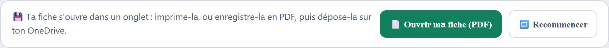
| # | Geste |
|---|---|
1 | Clique sur 📄 Ouvrir ma fiche (PDF), le bouton vert en bas de la séance — ou dans la fenêtre « Séance terminée » |
2 | La fiche s'ouvre dans un onglet. Enregistre-la en PDF (Imprimer → Enregistrer au format PDF) |
3 | Dépose-la dans ton dossier SNT partagé sur OneDrive — un fichier par séance, nommé clairement |
🔎 Ce que devient ta réponse. Quand tu cliques sur Partager avec la classe, ton texte part chez ton professeur — c'est volontaire : rien n'est transmis tant que tu n'as pas cliqué, et tu peux relire avant. Il en choisira quelques-unes pour lancer la discussion en classe. Ces réponses ne sont ni notées, ni corrigées : elles ne passent pas par la relecture, elles n'entrent pas dans ta moyenne, il n'y a pas de bonne réponse. C'est le seul type d'exercice dont on ne te dira jamais s'il est juste.
Tu as fini avant les autres ? Voici de quoi creuser. Rappel de la règle : ces blocs sont facultatifs et ne comptent nulle part — ni dans ta progression, ni dans une note. Ils sont là pour le plaisir.
🧭 Clin d'œil vers la spé NSI (première / terminale) — juste au-dessus, tu as rangé des éléments dans trois catégories nettes : machine, réseau, service. Classer de l'information dans des catégories, c'est déjà fabriquer une donnée structurée. En NSI, on apprend à ranger ces catégories dans une base de données, puis à les trier et les retrouver automatiquement avec quelques lignes de code. Rien à retenir ici — c'est un repère, pas une leçon, et ça ne compte pas.
😎 Défi geek. Dans chaque séquence se cachent des messages pour ceux qui vont regarder sous le capot. Le premier de l'année : ouvre la console du navigateur avec la touche F12 (ou clic droit → Inspecter), va dans l'onglet Console, et lis ce qui s'y trouve.
💡 Sur PC uniquement. Cette console et l'inspecteur d'éléments existent sur les ordinateurs, pas sur iPad : Safari n'en a pas. Si tu es sur tablette, garde le défi pour la salle informatique.
Ouvrir une unité centrale et nommer ce qu'on y trouve : l'alimentation, la carte mère, le processeur, la mémoire vive, les cartes d'extension, le stockage. Et découvrir trois nouveaux gestes du cours : déposer une copie d'écran, dévoiler un « à retenir », écrire dans son glossaire.
Un système informatique se sépare en deux. Le matériel (hardware en anglais) : tout ce qu'on peut toucher — les composants, les câbles, les cartes. Le logiciel (software) : les programmes et le système d'exploitation, qui n'existent que sous forme d'instructions. Cette séance et la suivante ne parlent que de matériel. Le logiciel revient en séance 3, avec le système d'exploitation.
Un terminal informatique est un système informatisé placé à l'extrémité du réseau : c'est la machine par laquelle un humain entre dans le réseau, ou en sort. Le mot vient de là — terminus, le bout de la ligne. Ordinateur de bureau, portable, tablette, smartphone, console : tous sont des terminaux dès qu'ils sont connectés.
Sur un ordinateur de bureau, on appelle unité centrale le boîtier — la « tour » — qui contient les organes de calcul. Attention au piège : l'écran, le clavier, la souris et l'imprimante n'en font pas partie. Ce sont des périphériques, on les branche autour (séance 3). Sur un portable, une tablette ou un téléphone, l'unité centrale et les périphériques sont dans le même objet — mais les organes sont exactement les mêmes, simplement miniaturisés.
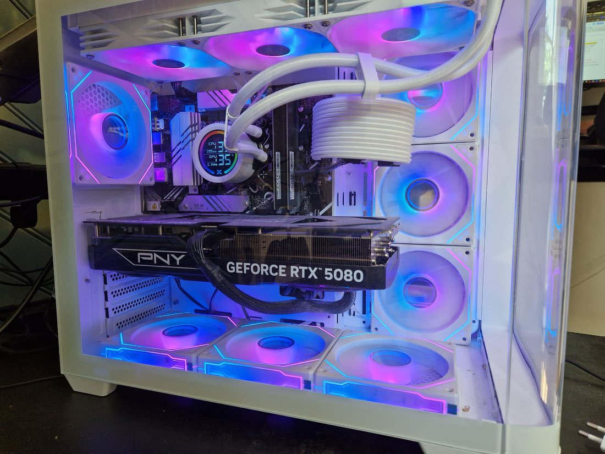
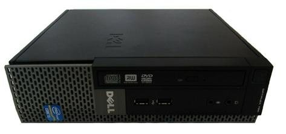
🎬 Une vidéo de Codeur Pro — dix minutes. Casque recommandé ; mets en pause autant que tu veux pour prendre des notes.
Tu n'as rien à retenir par cœur de cette vidéo. Les étapes qui suivent reprennent chaque composant, un par un, dans le même ordre.
La prise murale délivre du 230 V alternatif. Aucun composant d'ordinateur ne supporte cela : un processeur travaille sous 1 volt environ, un disque dur sous 5 et 12 volts. Entre les deux, il faut un traducteur : le bloc d'alimentation, souvent appelé PSU (Power Supply Unit).
Son travail : transformer le 230 V alternatif du secteur en plusieurs basses tensions continues — principalement +12 V, +5 V et +3,3 V — et les distribuer dans toute la machine par un faisceau de câbles colorés. Cette conversion produit de la chaleur : c'est pourquoi le bloc a son propre ventilateur, celui qu'on entend souffler à l'arrière de la tour.
Sur un appareil mobile — portable, tablette, téléphone —, le même travail est fait par le chargeur, et une batterie prend le relais quand on débranche. La batterie ne remplace pas l'alimentation : elle stocke l'énergie que celle-ci a préparée.
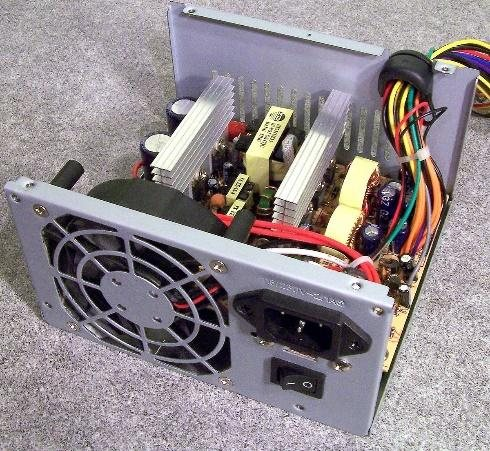
Toutes les plaques vertes (ou bleues, ou noires) que tu vas voir dans cette séance sont des circuits imprimés : une plaque isolante sur laquelle on a « imprimé » des pistes de cuivre. Ces pistes remplacent les fils : elles relient les composants soudés dessus. C'est cette invention qui a permis de miniaturiser l'électronique — avant elle, chaque liaison était un fil soudé à la main.
PSU) transforme le 230 V alternatif du secteur en basses tensions continues — surtout +12 V et +5 V — et les distribue à tous les composants. Il chauffe, donc il ventile. Sur un appareil mobile, ce rôle est tenu par le chargeur, et une batterie prend le relais hors secteur. Tous les composants sont montés sur des circuits imprimés : des plaques dont les pistes de cuivre remplacent les fils.La carte mère est le grand circuit imprimé sur lequel tout se branche. Elle ne calcule pas : elle relie. Processeur, mémoire vive, cartes d'extension, disques, ports de la façade arrière — tout passe par elle.
Ces liaisons ont un nom : le bus. C'est le faisceau de pistes par lequel les données circulent d'un composant à l'autre — du processeur vers la mémoire, de la mémoire vers la carte graphique. Si la carte mère est le plan de la ville, le bus, ce sont ses avenues.
La ROM et le BIOS. La carte mère porte aussi une petite mémoire qui n'oublie jamais, même débranchée : la ROM. Elle contient le BIOS, le programme de démarrage. C'est lui qui réveille la machine quand tu appuies sur le bouton, vérifie que le matériel répond, puis va chercher le système d'exploitation sur le disque. Sur les machines récentes, il s'appelle UEFI et fait la même chose en mieux.
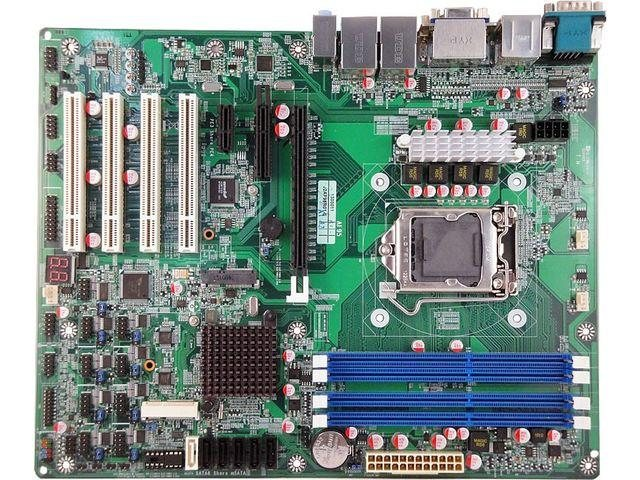
Le processeur — CPU, pour Central Processing Unit, « unité centrale de traitement » — est la puce qui exécute les instructions. Absolument tout ce que fait la machine finit par passer par lui, quelques milliards de fois par seconde. On le juge sur deux chiffres :
| Chiffre | Ce qu'il mesure |
|---|---|
La fréquence, en GHz | Le nombre d'opérations élémentaires par seconde. 3 GHz = trois milliards de battements par seconde |
| Le nombre de cœurs | Le nombre de calculateurs indépendants dans la même puce. 8 cœurs = huit choses menées vraiment en parallèle |
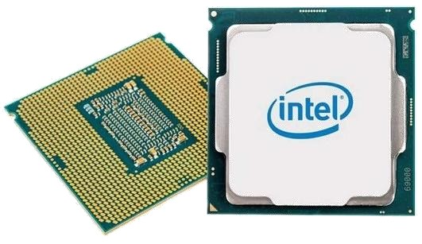
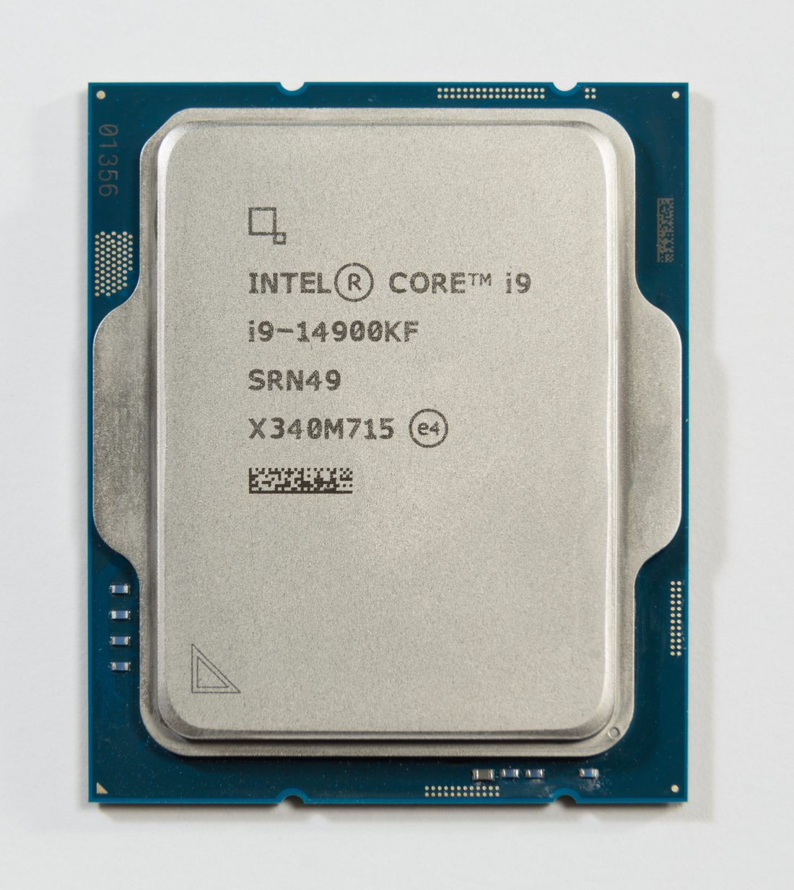
La mémoire vive — RAM, pour Random Access Memory — est l'espace de travail du processeur. Tout ce qui est ouvert y est posé : le système, les applications, le document en cours. Elle est très rapide, et elle s'efface complètement à l'extinction. C'est une table de travail, pas une armoire.
D'où l'expression : quand tu ouvres trop d'applications et d'onglets, la table déborde. La machine doit alors poser une partie du travail sur le disque, beaucoup plus lent, et tout ralentit d'un coup. C'est ce qu'on appelle « ça rame ».
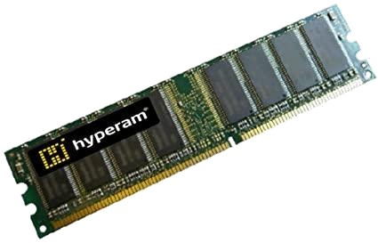
Voici le premier « à retenir » masqué de l'année, celui qu'on t'annonçait à l'étape 1.1. Tant que l'exercice ci-dessus n'est pas terminé, la ligne grise en dessous te dit ce qu'il reste à répondre ; le bilan s'ouvre tout seul ensuite.
BIOS — le programme de démarrage (UEFI sur les machines récentes).CPU) exécute les instructions. Deux chiffres le décrivent : sa fréquence en GHz et son nombre de cœurs.RAM) est le plan de travail : très rapide, elle s'efface à l'extinction. Quand elle sature, « ça rame ».Une carte mère sait déjà faire beaucoup. Mais on peut lui ajouter des fonctions en enfichant des cartes d'extension dans ses connecteurs. Le connecteur moderne s'appelle PCIe (Peripheral Component Interconnect express). Il existe en plusieurs longueurs — x1, x4, x16 — selon le débit nécessaire : plus la carte a besoin de données, plus son connecteur est long.
| Carte | Ce qu'elle apporte |
|---|---|
Carte graphique (GPU) | Calcule les images. Elle a son propre processeur et sa propre mémoire vidéo — d'où sa taille et ses ventilateurs. Indispensable au jeu, à la 3D, au montage vidéo |
| Carte son | Convertit le son numérique en signal pour les enceintes ou le casque. Ses prises jack sont colorées |
| Carte réseau | Ajoute une ou plusieurs prises RJ45 pour le câble Ethernet |
| Carte Wi-Fi | Même chose, mais sans fil : on la reconnaît à ses antennes |
| Contrôleur USB | Ajoute des ports USB quand ceux de la carte mère ne suffisent plus |
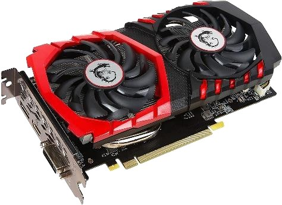
languette PCIe x16PCIe x16 — le plus long.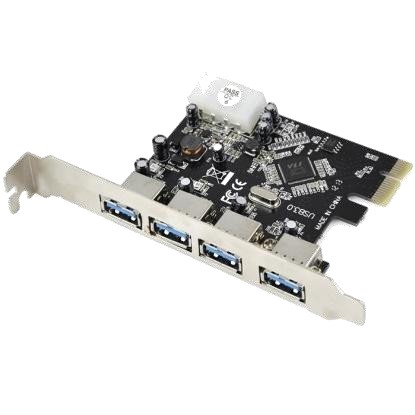
languette PCIe x1PCIe x1 — compare la longueur de sa languette dorée avec celle de la carte graphique.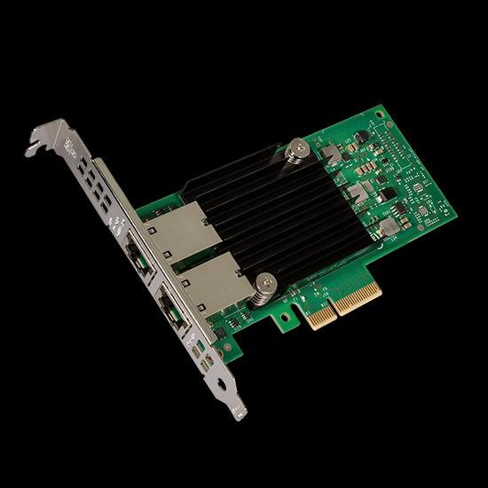
RJ45. Connecteur PCIe x1 ou x4 selon le débit.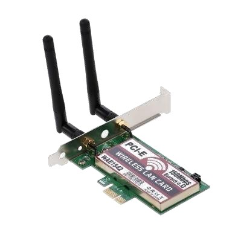
PCIe x1.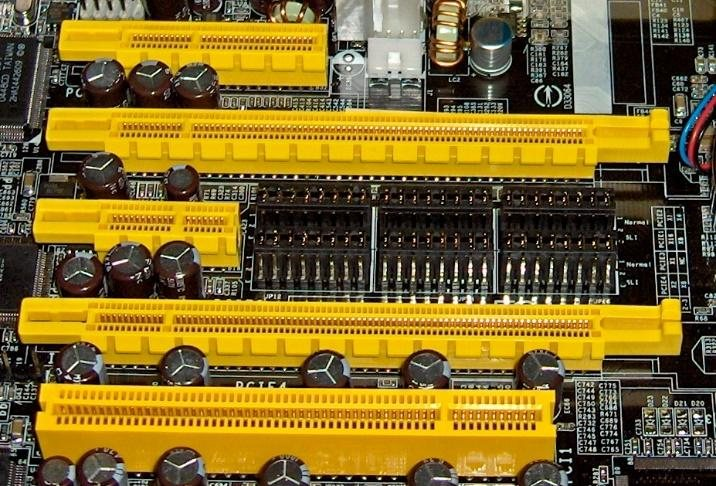
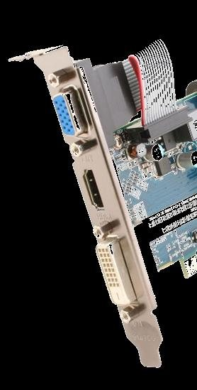
PCIe x16, malgré sa petite taille : c'est la longueur du connecteur qui compte, pas celle de la carte.Il y a vingt ans, une machine complète demandait trois ou quatre cartes. Aujourd'hui, le son, le réseau et souvent le graphisme sont intégrés directement à la carte mère ou au processeur — on parle alors de puce graphique intégrée. C'est la miniaturisation : ce qui tenait sur une carte entière tient maintenant dans une puce de quelques millimètres. On n'ajoute plus une carte que pour dépasser ce que la machine sait déjà faire — typiquement une carte graphique pour le jeu.
PCIe de la carte mère pour lui ajouter une fonction. Les principales : la carte graphique (GPU + mémoire vidéo), la carte son, la carte réseau (RJ45), la carte Wi-Fi (à ses antennes) et le contrôleur USB. Le connecteur existe en x1, x4 et x16 : plus la carte a besoin de débit, plus il est long. Avec la miniaturisation, son, réseau et graphisme sont désormais le plus souvent intégrés à la carte mère.Parfois, la preuve de ton travail est une image. La page te propose alors un bouton 📷 Choisir ma copie d'écran : ton image s'affiche aussitôt en dessous, elle reste visible, et elle se retrouve sur ta fiche de fin de séance. Deux règles, toujours les mêmes : on dépose une copie d'écran de ce qu'on te demande d'observer, jamais une photo personnelle.
Contrairement à la mémoire vive, le stockage garde les données machine éteinte. Trois techniques très différentes se sont succédé — et coexistent encore.
1 · L'optique — on grave, on lit avec un laser. Un lecteur optique fait tourner un disque de polycarbonate et lit sa surface avec un laser. Les creux et les plats renvoient la lumière différemment : c'est ainsi qu'on code les 0 et les 1. Trois générations, de plus en plus fines : le CD (environ 700 Mo), le DVD (4,7 Go), le BluRay (25 Go et plus) — le laser bleu du dernier, de longueur d'onde plus courte, permet de graver plus serré. En voie de disparition : la plupart des machines vendues aujourd'hui n'ont plus de lecteur.
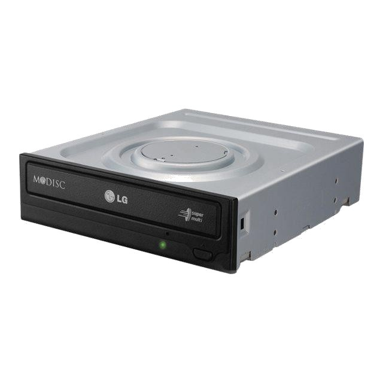
2 · Le magnétique — on aimante une surface. C'est la technique de la disquette, puis du disque dur (HDD, Hard Disk Drive). À l'intérieur, des plateaux tournent à grande vitesse — 5 400 ou 7 200 tours par minute — pendant qu'un bras de lecture les survole à quelques nanomètres pour aimanter ou lire de minuscules zones. C'est mécanique : donc lent par rapport au reste, bruyant, et fragile aux chocs. Mais très bon marché au gigaoctet, ce qui lui vaut de survivre là où il faut beaucoup d'espace.
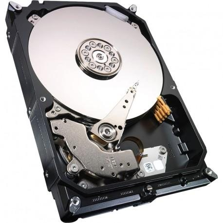
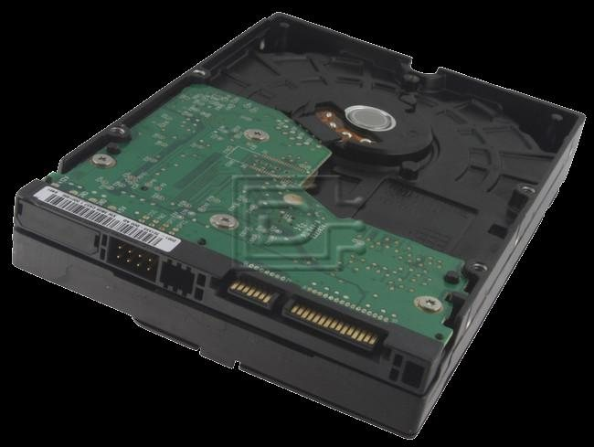
SATA, celui qui le relie à la carte mère.3 · La mémoire flash — plus aucune pièce mobile. Le SSD (Solid State Drive, « disque à état solide ») stocke dans des puces de mémoire flash. Aucun plateau, aucun bras, aucun bruit : les données sont là où on les demande, immédiatement. Un SSD est plusieurs dizaines de fois plus rapide qu'un disque dur, insensible aux chocs, et beaucoup plus petit. Il coûte plus cher au gigaoctet. C'est la même technologie que dans une clé USB, une carte SD ou ton téléphone.
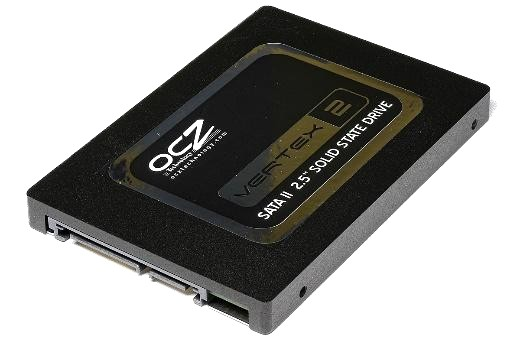
SATA qu'un disque dur : on peut remplacer l'un par l'autre.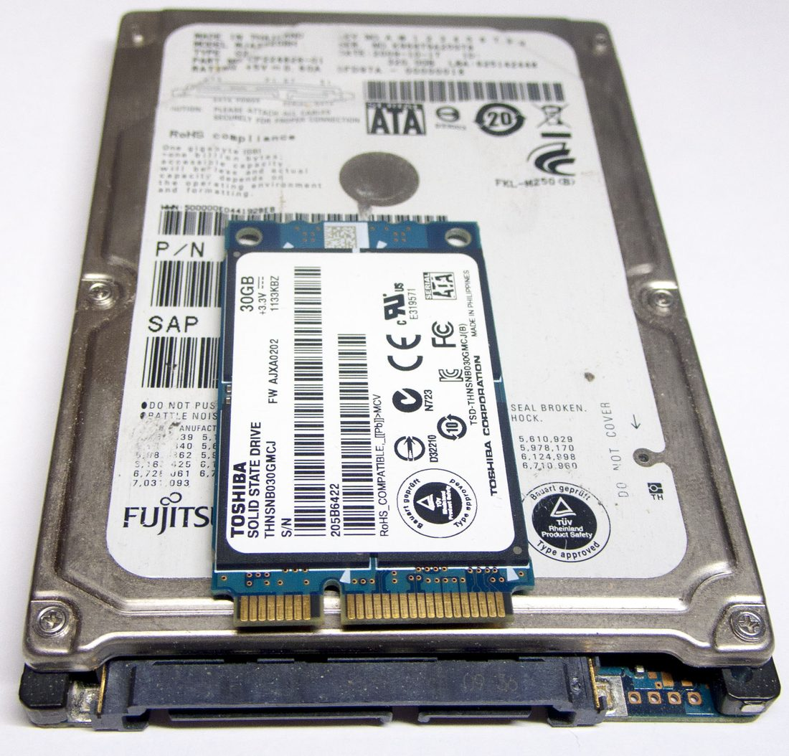
| Année | Support | Technique |
|---|---|---|
1971 | La disquette | Magnétique — 1,44 Mo à la fin de sa carrière, soit un tiers de photo de téléphone |
1983 | Le disque dur arrive dans les micro-ordinateurs | Magnétique — 10 Mo sur les premiers modèles |
1985 | Le CD-ROM | Optique — 700 Mo, un laser rouge |
1996 | Le DVD | Optique — 4,7 Go, gravure plus serrée |
2006 | Le BluRay | Optique — 25 Go, laser bleu, longueur d'onde plus courte |
2007 | Le SSD grand public | Mémoire flash — aucune pièce mobile |
Regarde la colonne de droite : le mouvement va du magnétique à l'optique, puis à la flash. Et à chaque fois, la même chose se produit — plus de capacité, plus de vitesse, moins de pièces qui bougent.
HDD), des plateaux tournants et un bras de lecture, lent et fragile mais peu cher ; mémoire flash — le SSD, aucune pièce mobile, bien plus rapide, plus cher au gigaoctet. Même technologie que la clé USB et le téléphone. Le SSD moderne n'est souvent plus un boîtier : c'est une barrette M.2, longue comme un doigt, vissée à plat sur la carte mère.Voici l'autre geste annoncé à l'étape 1.1. Tu vas écrire une définition avec tes mots : elle rejoindra ton glossaire permanent, le bouton 📖 en bas à droite de l'écran, et elle t'y attendra toute l'année, dans toutes les séquences.
Quinze questions sur toute la séance. Plusieurs te montrent une photo : c'est de la reconnaissance, comme devant une machine ouverte. Tu peux remonter dans les étapes précédentes autant que tu veux.
Facultatif, jamais évalué — pour ceux que le sujet démange.
🎧 Deux heures d'écoute, si le sujet te tient. Ces deux épisodes racontent d'où viennent les machines de cette séance. Ils durent une heure chacun : c'est pour un trajet, un soir, pas pour l'heure de cours.
ROM, BIOS, UEFI : les trois secondes avant que rien ne s'affiche. Quand tu appuies sur le bouton, le processeur ne sait rien faire : il n'a aucun programme en mémoire vive, puisqu'elle vient de s'effacer. Il va donc chercher, toujours à la même adresse, un programme gravé dans la ROM (Read Only Memory) de la carte mère. Ce programme s'appelle le BIOS (Basic Input Output System). Il exécute d'abord un POST (Power-On Self-Test) — il compte la mémoire, vérifie que le clavier et les disques répondent —, puis il cherche un système d'exploitation à démarrer. Depuis une quinzaine d'années, il est remplacé par l'UEFI, qui fait la même chose en mieux : interface graphique, disques de plus de 2 To, démarrage sécurisé.
Sur presque toutes les machines, une touche pressée au tout début de l'allumage (souvent Suppr, F2 ou F12) ouvre cet écran. C'est là qu'on choisit sur quel disque démarrer. N'y touche pas sur un poste du lycée — mais sache que ça existe.
De l'IDE au SATA : la nappe qui a disparu. Avant 2003, les disques se reliaient à la carte mère par une norme appelée IDE (aussi nommée PATA, pour Parallel ATA) : une grosse nappe plate de 40 fils, large comme trois doigts, qui étouffait la circulation de l'air dans le boîtier. Elle a été remplacée par le SATA (Serial ATA) : un câble fin de sept fils, plus rapide malgré ses fils en moins — parce qu'il envoie les bits en série, un derrière l'autre, très vite, au lieu de les envoyer en parallèle sur quarante fils qu'il faut synchroniser.
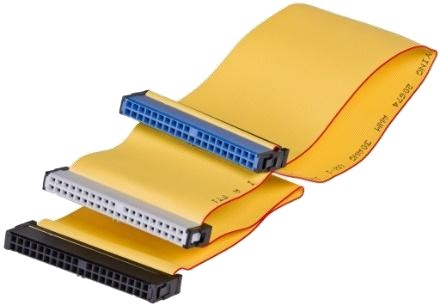
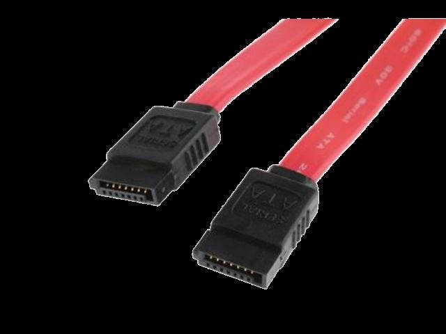
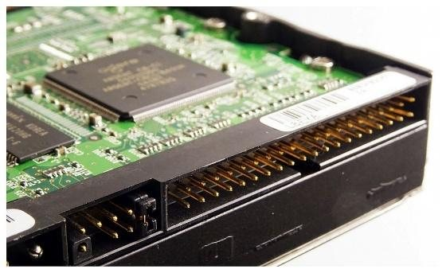
Et si tu veux tout voir en vrai, à la loupe. Une vidéo qui démonte les composants un par un et descend jusqu'au niveau des puces : carte mère, carte graphique, disque dur, SSD, barrettes de mémoire. Elle dure 49 minutes — ce n'est pas un extrait à caser entre deux exercices, c'est une soirée. Rien à en retenir pour le cours.
🎬 Anatomie détaillée des principaux composants d'un PC · Data LabCenter · 49 min — hors programme, pour le plaisir.
Reconnaître les ports d'une machine et savoir ce qui s'y branche, lire l'histoire du matériel sur une façade arrière, puis choisir un appareil sur six critères. Et découvrir les deux derniers rouages du cours : le mode enseignant et le glossaire.
Un périphérique est tout ce qui se branche autour de l'unité centrale. On les range selon le sens dans lequel l'information circule.
| Famille | Sens | Exemples |
|---|---|---|
| Entrée | vers la machine | Clavier, souris, micro, scanner, webcam, manette |
| Sortie | depuis la machine | Moniteur, enceintes, casque, imprimante, vidéoprojecteur |
| Les deux | dans les deux sens | Écran tactile, disque externe, clé USB, casque à micro, imprimante multifonction |
Pour relier un moniteur, quatre connecteurs se sont succédé — et on les croise encore tous les quatre.
| Connecteur | Ce qu'il transporte | Où on le voit |
|---|---|---|
VGA | L'image seule, en signal analogique. 15 broches sur trois rangées, capot bleu, deux vis | Machines et vidéoprojecteurs anciens. En voie d'extinction |
DVI | L'image seule, en numérique. Large, blanc, beaucoup de broches, deux vis | La génération intermédiaire, années 2000. Presque disparu |
HDMI | Image et son dans le même câble. Petit, en forme de trapèze, sans vis | Partout : téléviseurs, consoles, ordinateurs, vidéoprojecteurs |
DisplayPort | Image et son également, avec plus de débit. Un coin biseauté | Le monde de l'informatique : écrans de bureau, cartes graphiques |
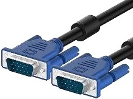
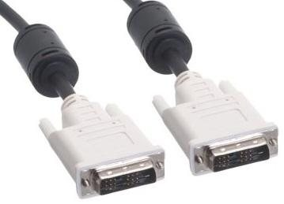
La prise jack de 3,5 mm est la plus courante : c'est celle du casque. Sur un ordinateur de bureau, plusieurs jacks sont alignés et colorés, et la couleur dit la fonction — vert pour la sortie (casque, enceintes), rose pour l'entrée micro, bleu pour une entrée ligne (une source extérieure). Deux autres connecteurs existent pour la chaîne hi-fi : le RCA, une prise ronde à collerette qu'on trouve souvent par paire (blanc et rouge, gauche et droite), et le S/PDIF optique, qui transporte le son en lumière dans une fibre — donc sans aucune perturbation électrique.
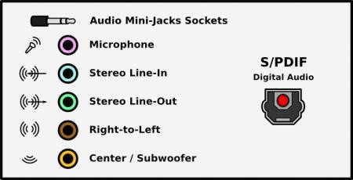
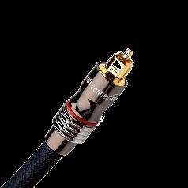
La prise RJ45 reçoit le câble réseau (dit « Ethernet »). On la reconnaît à sa languette souple qui clique quand on l'enfonce. Au bout du câble, dans une maison, il y a en général la box internet — un appareil qui fait à lui seul plusieurs métiers : elle relie le logement à Internet, elle distribue le réseau local (par câble et par Wi-Fi), et elle joue le rôle de routeur, c'est-à-dire qu'elle choisit par où faire passer chaque information. Dans une entreprise ou chez un particulier équipé, on trouve aussi un NAS (Network Attached Storage) : un boîtier de disques branché sur le réseau, que toutes les machines de la maison peuvent utiliser.
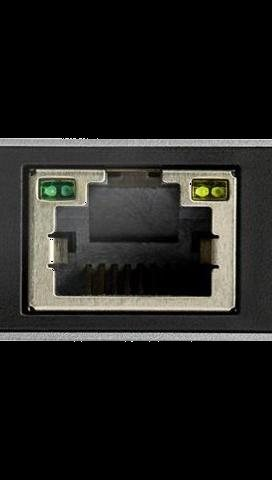
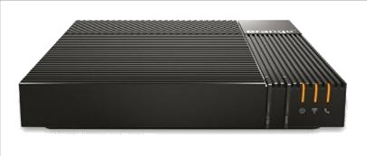
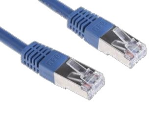
Clavier, souris, imprimante, scanner, webcam, disque externe, manette : tout cela se branche aujourd'hui en USB, ou se connecte sans fil par Bluetooth avec un petit récepteur… lui-même en USB. C'est le sujet de l'étape suivante.
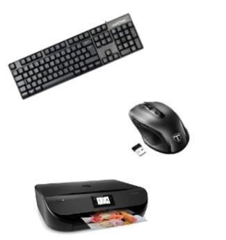
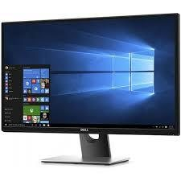
Les photos ci-dessus n'ont ni la même échelle ni le même cadrage : impossible de comparer. Voici donc les quatorze connecteurs que tu croiseras, dessinés à la même taille les uns par rapport aux autres. C'est cette planche qui te servira pour l'exercice — et pour le relevé de l'étape 3.4.
VGA (analogique, ancien), DVI (numérique, intermédiaire), HDMI (image et son, partout) et DisplayPort (informatique, plus de débit). Pour le son : les prises jack colorées — vert en sortie, rose au micro, bleu en entrée —, le RCA et le S/PDIF optique. Pour le réseau : la prise RJ45, au bout de laquelle se trouvent la box (modem + routeur + Wi-Fi) et parfois un NAS. Tout le reste passe par l'USB.USB veut dire Universal Serial Bus — « bus série universel ». Avant lui, chaque périphérique avait son connecteur : le clavier en PS/2, la souris en PS/2 (mais pas la même couleur), l'imprimante sur un gros port parallèle à 25 broches, le modem sur un port série, la manette sur un port de carte son. Brancher un appareil neuf, c'était vérifier qu'on avait la bonne prise libre.
Arrivé en 1996, l'USB a tout absorbé, et il apporte trois choses que les autres n'avaient pas : on peut brancher machine allumée, la machine reconnaît seule l'appareil branché, et le câble transporte aussi du courant — c'est pour cela qu'on recharge un téléphone en USB, et qu'une lampe ou un ventilateur de bureau se branche sur un ordinateur.
| Format | À quoi on le reconnaît | Où |
|---|---|---|
| USB-A 2.0 | Le rectangle classique, languette blanche ou noire | Le port le plus répandu depuis 2000 |
| USB-A 3.1 SuperSpeed | Même forme, languette bleue. Un câble 2.0 y entre et fonctionne — moins vite | Les machines depuis 2010 environ |
| micro-USB-B | Un petit trapèze, qui n'entre que dans un sens | Téléphones d'avant 2018, liseuses, manettes |
| USB-C | Un ovale, réversible : les deux sens fonctionnent | Le format actuel, imposé dans l'Union européenne |
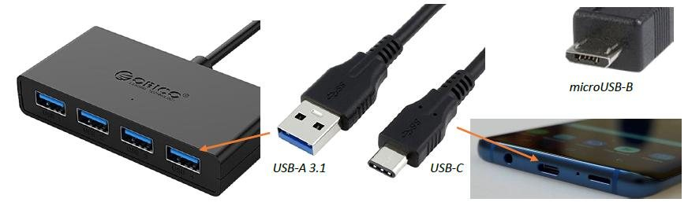
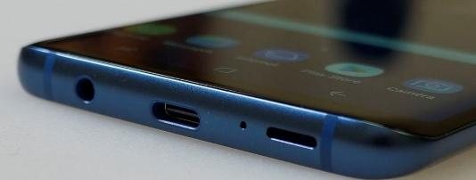
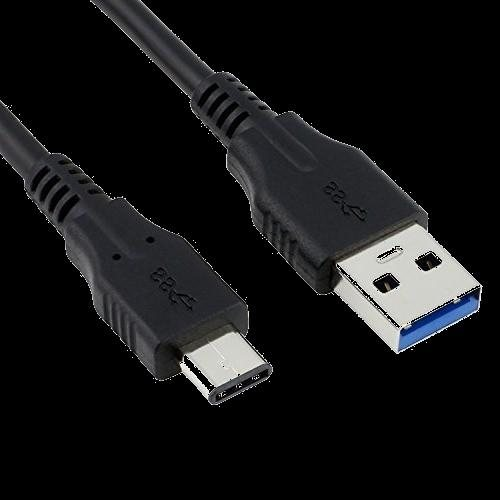
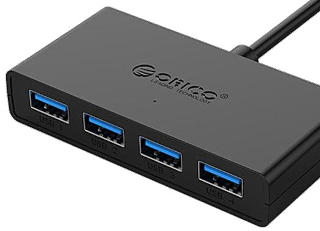
USB = Universal Serial Bus, apparu en 1996. Il a remplacé les ports PS/2, série et parallèle, parce qu'il apporte trois choses : le branchement machine allumée, la reconnaissance automatique de l'appareil, et le transport du courant (d'où la recharge). Quatre formats : USB-A 2.0 (languette claire), USB-A 3.1 SuperSpeed (même forme, languette bleue, plus rapide), micro-USB-B (petit trapèze, un seul sens) et USB-C (ovale, réversible, format actuel).Voici l'arrière de deux machines qui existent pour de vrai : une vieille tour d'une part, la machine de ton professeur d'autre part. Elles ont une quinzaine d'années d'écart. Agrandis-les (clique dessus) et compare-les : c'est en les regardant l'une après l'autre qu'on voit le matériel vieillir.
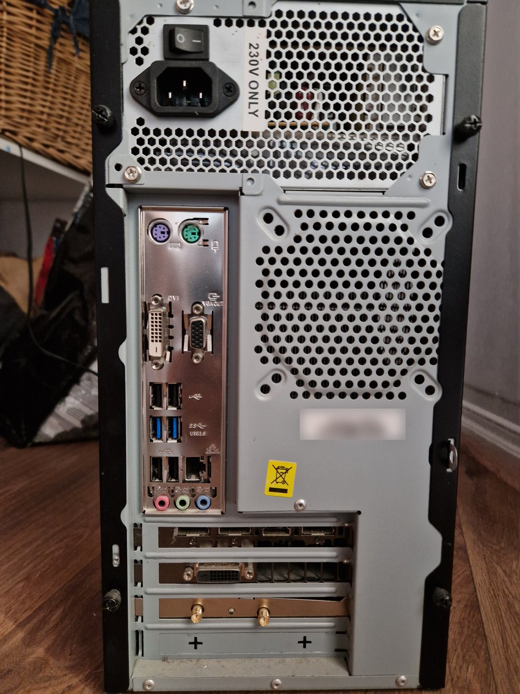
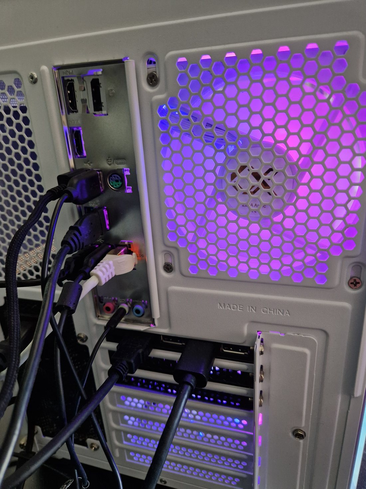
Dix emplacements sont marqués sur la vieille tour. Touche une étiquette, puis touche l'emplacement qui lui correspond. Pour corriger, touche l'emplacement : l'étiquette revient dans la réserve.
💡 Agrandis la photo plus haut si tu hésites — c'est la même machine.
HDMI et le DisplayPort se sont imposés ; le RJ45, les jacks audio et l'USB sont restés. Un connecteur ne meurt pas d'un coup : il survit des années sur quelques machines, le temps que le parc se renouvelle. C'est pour cela qu'on trouve encore une prise PS/2 sur une machine de 2025. Une machine porte aussi le symbole DEEE — la poubelle barrée : un appareil électronique ne se jette pas avec les ordures ménagères, il se dépose en déchetterie ou chez le vendeur.Assez regardé les photos des autres. Va voir la machine devant toi — celle de la salle, ou la tienne si tu travailles chez toi. Regarde sa façade avant, puis sa façade arrière.
| # | Ce que tu fais |
|---|---|
1 | Photographie la façade arrière de l'unité centrale avec ta tablette — bien en face, assez près pour qu'on distingue les couleurs des prises |
2 | Dépose la photo ci-dessous |
3 | Écris ce que tu as identifié, dans la case qui suit — au moins quatre connecteurs, avec leur nom |
⚠️ On photographie du matériel, pas des gens. Cadre la machine, rien d'autre : ni ton voisin, ni un écran affichant un travail, ni une étiquette portant un nom ou un numéro d'inventaire. Si tu ne peux pas éviter une étiquette, décale-toi.
C'est la première question, et elle commande toutes les autres. Un appareil fixe — une tour — se répare, s'améliore composant par composant, coûte moins cher à performance égale, et ne bouge pas. Un appareil mobile — portable, tablette, téléphone — se transporte, fonctionne sur batterie, mais chauffe plus vite, se répare mal (tout est soudé) et coûte plus cher pour la même puissance. La mobilité se paie : en argent, en performance, en durée de vie.
La taille d'un écran se donne par sa diagonale, exprimée en pouces (″). Un pouce vaut exactement 2,54 cm — un héritage anglo-saxon dont l'informatique ne s'est jamais débarrassée. Un écran de 15″ mesure donc 15 × 2,54 = 38,1 cm de diagonale.
Deux autres mots reviennent sur les fiches produit. La définition est le nombre de pixels de l'écran — par exemple 1920 × 1080. La résolution est la densité de ces pixels, en dpi (dots per inch, points par pouce) : c'est elle qui décide si l'on distingue les pixels à l'œil nu. Les deux sont constamment confondus, y compris par les vendeurs. On les sépare proprement dans le « pour aller plus loin » de cette séance.
Enfin, l'écran peut être tactile — on désigne du doigt au lieu de pointer. Sur un portable, la souris est remplacée par un touchpad (ou pavé tactile) : une surface plane sous le clavier, qui suit le doigt.
| Critère | Ce qu'on lit sur la fiche | Ce que ça change |
|---|---|---|
| Puissance | La fréquence du processeur en GHz et son nombre de cœurs | La vitesse de calcul. Décisif pour le jeu, la 3D, le montage vidéo ; secondaire pour la bureautique |
| Mémoire vive | La quantité de RAM, en Go | Le nombre de choses ouvertes en même temps. Sous-dimensionnée, la machine « rame » en permanence |
| Stockage | La capacité en Go ou To, et la technologie : SSD ou disque dur | La place disponible — mais surtout la vitesse ressentie : un SSD change tout au démarrage et à l'ouverture des applications |
Le piège le plus courant. Entre une machine à gros processeur avec disque dur et une machine à processeur modeste avec SSD, c'est presque toujours la seconde qui paraît la plus rapide au quotidien. Le chiffre le plus mis en avant n'est pas celui qui se ressent le plus.
Le système d'exploitation (OS, Operating System) est le logiciel principal de la machine : il gère le matériel, fait tourner les applications et te donne l'interface avec laquelle tu commandes tout. Sans lui, la machine ne parle à personne. On ne le choisit presque jamais séparément — il vient avec l'appareil — mais il détermine quelles applications tu pourras installer.
| Système | Sur quoi |
|---|---|
| Windows | La grande majorité des ordinateurs fixes et portables |
| macOS | Les ordinateurs d'Apple, et eux seuls |
| Linux | Libre et gratuit ; majoritaire sur les serveurs, minoritaire sur les postes de bureau |
| Android | La majorité des smartphones et tablettes |
| iOS | Les iPhone et iPad |
| ChromeOS | Les Chromebook — un système léger, tourné vers le travail en ligne |
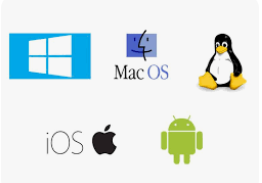
dpi), et son caractère tactile ou non ; 3. la puissance — fréquence en GHz et nombre de cœurs ; 4. la mémoire vive ; 5. le stockage — la capacité, mais surtout SSD plutôt que disque dur ; 6. le système d'exploitation — Windows, macOS, Linux, Android, iOS, ChromeOS, qui décide des applications installables.En haut de cette page, la petite mention 🔒 mode enseignant est la télécommande de ton professeur. Elle ouvre toutes les séances d'un coup — pour montrer quelque chose au tableau, coordonner la classe, ou débloquer un élève coincé par un verrou. Elle demande un code que lui seul connaît, et elle se coupe seule au bout de 30 minutes, avec un compte à rebours visible.
Un mot d'honnêteté : ce site est public, et son code s'exécute dans ton navigateur. Quelqu'un de déterminé peut donc contourner un verrou. Ce n'est pas un coffre-fort, c'est un panneau de signalisation. Il n'y a rien de secret derrière : le contenu est le même pour tout le monde, seule l'ouverture change. Si une séance reste fermée alors que tu devrais y accéder, ce n'est pas à toi de bidouiller : signale-le, ça prend dix secondes.
Le bouton 📖 Glossaire, en bas à droite, reste ouvert en permanence, dans toutes les séquences de l'année. Tu y retrouves les mots déjà définis — et surtout tes propres définitions, comme celle de « SSD » que tu as écrite en séance 2. Quand « routeur », « protocole » ou « serveur » reviendront dans un mois, ils y seront. Tu peux y chercher un mot même en tapant approximativement.
Facultatif, jamais évalué. Trois choses que même les vendeurs confondent.
1 · Définition n'est pas résolution. On les emploie l'un pour l'autre partout, y compris dans les rayons. Pourtant ils ne mesurent pas la même chose, et le schéma ci-dessous suffit à s'en convaincre : deux écrans peuvent avoir exactement la même définition et être très différents à regarder.
Retiens la formule : la définition se compte, la résolution se serre. Étaler 1920 pixels sur 13 pouces les rend invisibles ; les étaler sur 32 pouces les fait apparaître. C'est pour cette raison qu'un téléphone de 6 pouces peut afficher une image plus fine qu'un téléviseur de deux mètres.
2 · Deux connecteurs que tu ne verras sans doute jamais. Le PS/2, la prise ronde à six broches, servait au clavier (violet) et à la souris (verte) — deux prises identiques, et impossible de les intervertir sans que rien ne fonctionne. Le DB-25, lui, était le gros port parallèle de l'imprimante : vingt-cinq broches sur deux rangées, une prise large de six centimètres pour imprimer une page de texte. Les deux ont été balayés par l'USB. Il en reste parfois une prise PS/2 sur les cartes mères récentes — pour les vieux claviers de collectionneurs, et pour dépanner quand un pilote USB refuse de démarrer.
3 · USB4, ou la fin des câbles différents. La dernière génération, USB4, passe par un connecteur USB-C et peut transporter en même temps les données, l'image d'un écran, et jusqu'à 240 watts d'alimentation. Un seul câble entre un portable et un écran suffit alors : l'écran affiche, sert de hub USB, et recharge la machine. C'est l'aboutissement de l'idée de 1996 — un connecteur pour tout.
Devant du vrai matériel posé sur la table : photographier, reconnaître, nommer — et dire en trois mots ce que chaque élément fait. Le schéma, c'est bien ; le métal, c'est mieux.
Le schéma, c'est bien ; le métal, c'est mieux. Ton professeur pose devant vous les éléments d'une machine démontée. Photographie-les, puis identifie-les un par un : le but est d'en nommer le plus possible. Une récompense est à la clé.
⚠️ On photographie du matériel, pas des gens. Cadre la table, rien d'autre.
| # | Ce que tu fais |
|---|---|
1 | Photographie la table entière, où les éléments sont posés — c'est ta vue d'ensemble |
2 | Dépose cette photo d'ensemble ci-dessous |
3 | Passe à l'étape suivante : tu y photographies les éléments un par un |
4 | Pour chacun, tu écris son nom et, en trois mots, ce qu'il fait |
Le barème. 1 point par élément correctement nommé, 1 point de plus si tu dis ce qu'il fait. Le binôme qui totalise le plus de points l'emporte. Ton professeur annonce la récompense en début d'activité.
💡 Tu as le droit de remonter dans les étapes des séances 2 et 3. Personne ne retient tout du premier coup — savoir où chercher fait partie du jeu.
Dix emplacements t'attendent. Pour chacun : une photo de l'élément, son nom, et ce qu'il fait en trois mots. Tu n'es pas obligé d'en remplir dix — trois suffisent pour valider l'étape, et chaque fiche de plus rapporte des points.
💡 Un élément que tu ne reconnais pas ? Photographie-le quand même et remonte dans les séances 2 et 3 pour le retrouver. Savoir où chercher fait partie du jeu.
⚠️ On photographie du matériel, pas des gens. Cadre la table, rien d'autre. Tes photos restent sur cette page : pense à ouvrir ta fiche en fin de séance pour en garder la trace.